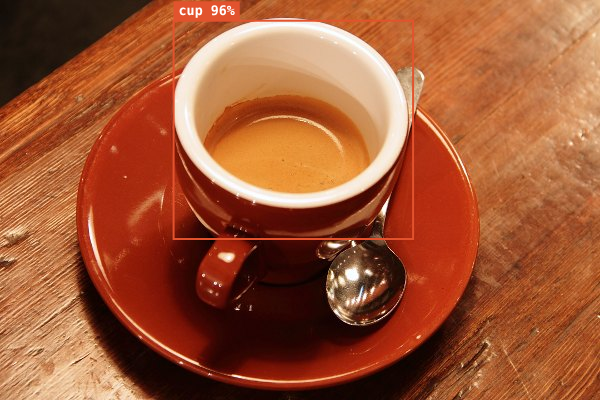
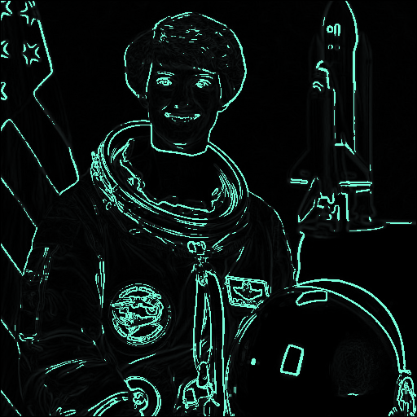

How Vision Lab works
Each tool in the lab is a small, real computer-vision technique. Here is what each one does, the idea behind it, and where it breaks.
1. Object detection: finding things in a picture
The detector is COCO-SSD: a Single Shot MultiBox Detector (SSD) built on a small network called MobileNet v2, trained on the COCO dataset of everyday photos. It knows 80 kinds of objects: people, vehicles, animals, food, furniture and household items such as cups, bottles, phones, laptops and books.
"Single shot" means the network looks at the image once. It lays a grid of candidate boxes of different sizes and shapes over the picture and, for each box, predicts two things: how likely each of the 80 classes is, and how to nudge the box to fit the object. Overlapping boxes that describe the same object are merged (non-maximum suppression), and what is left are the boxes you see, each with a confidence score.

The confidence slider hides boxes below a threshold. A high threshold shows only sure detections; a low one shows the network's guesses, including mistakes. Moving it is a quick way to see the trade-off every detection system makes between missing things and raising false alarms.
Where it fails. The lite model is chosen to run fast on a phone, so it gives up accuracy: small or distant objects, unusual angles, partly hidden objects and crowded scenes are often missed. Anything outside the 80 COCO classes (a screwdriver, a plant pot, a specific brand) cannot be named at all; at best it is mistaken for something similar.
2. The line counter: following objects over time
Detection works on single frames; counting needs memory. With the camera on, every detector pass produces a list of boxes. The counter turns each box into a centre point and matches it to the nearest centre of the same class from the previous pass (if it is close enough). A matched pair is one track: the same object, seen twice.
When a track's centre moves from one side of the line to the other, it is counted once, in that direction: down or up for a horizontal line, right or left for a vertical one. A track that is not seen for several passes is dropped. This "nearest centre" matching is the simplest tracking method there is, and the same idea, with better matching, sits inside many people and traffic counters.
Where it fails. If the detector misses an object for a few frames while it crosses, the crossing can be lost. If two people walk side by side and swap places, their tracks can swap. If an object moves very far between two detector passes (fast motion on a slow phone), it starts a new track and its crossing is not seen. For honest counts, mount the phone still, put the line where objects are large and well separated, and check a few minutes by hand against the counter.
3. Edges: where brightness changes
An edge is a place where brightness changes quickly. The Sobel operator measures that change at every pixel with two small 3×3 filters, one for left-right change and one for up-down change, and combines them into an edge strength. Pixels stronger than the threshold are drawn bright.

Edge maps are the starting point for measuring outlines, finding cracks or scratches, and reading the shape of parts on a conveyor. The share of edge pixels is a crude but useful "busyness" or sharpness measure: a blurred photo has far fewer edges than a sharp one of the same scene.
4. Colour measurement: how much of the picture is this colour?
Tap a pixel and the lab averages a small 5×5 patch around it, so one noisy pixel does not decide. Every pixel whose colour is within the tolerance (a distance in red-green-blue space) stays in colour; everything else turns grey. The share of matching pixels is the measurement.
Simple colour checks like this are used to grade ripeness, spot rust, or confirm a label is present. Their weakness is lighting: the same banana under a warm lamp and in daylight has different pixel values, so real systems control the light or work in colour spaces that separate brightness from hue.
5. Cartoon: posterize plus ink
The cartoon effect combines two steps. Posterizing rounds each colour channel to a few levels, so smooth gradients become flat bands. Then strong edges from the Sobel step are painted dark on top, like ink lines. Fewer levels give a flatter, poster-like result.
6. Histogram: reading exposure
The histogram counts how many pixels sit at each brightness from 0 (black) to 255 (white), for red, green and blue. A pile at the left edge means shadows are crushed to black; a pile at the right edge means highlights are blown out to white. The lab also reports mean brightness and contrast (the standard deviation of brightness) and warns when more than 3% of pixels are clipped at either end.
7. Privacy blur: using detection to hide things
Privacy blur reuses the same detector, but instead of drawing a box it hides what is inside it. Each box is grown by 6% on every side (detector boxes are often tight around heads and hands) and then pixelated: the region is cut into square blocks and every block is filled with its average colour. A solid black box is the stricter option.
Where it fails. It can only hide what the detector finds. A small, distant or half-hidden person may be missed and stay visible, which is why the default sensitivity is lower (30%) than for detection: here a false alarm costs little and a miss costs privacy. "Vehicles" hides whole cars, buses and motorcycles, which covers number plates but not much else; always look at the result before you share it.
8. Motion map: frame differencing and a heat map
The simplest way to find motion is to subtract each camera frame from the one before. Where nothing moved, the difference is close to zero; where something moved, it is large. Pixels whose brightness changed by more than the threshold are marked as moving, and their share of the frame is the "moving now" reading.
The heat map adds memory: every moving pixel adds to a running total that slowly fades (each frame keeps 99.5% of the old value), so places with repeated motion glow brighter than places that moved once. Retail and warehouse teams use the same idea to see which aisles, shelves or doors get the most traffic. Its weaknesses: a moving or shaking camera makes everything look like motion, and flickering lights or changing sunlight do too, so mount the phone still and use the threshold to ignore small changes.
9. QR scanner
QR codes are read with jsQR, an open-source decoder. It looks for the three square finder patterns in the corners, works out the grid from them, reads the black and white modules, and corrects errors with the Reed-Solomon code built into every QR code, which is why a slightly scratched code still reads. On the camera it tries a few times a second; on a photo it also tries the inverted image, for light-on-dark codes.
The scanner never opens a link by itself. QR codes are a common way to send people to fake login or payment pages, so it shows the full address first and lets you decide.
10. Colour palette: k-means clustering
The palette tool takes about 6,000 pixels spread evenly over the picture and groups them into k clusters with the k-means algorithm. It starts with k centres spread apart (the k-means++ method), assigns each pixel to its nearest centre in red-green-blue space, moves each centre to the average of its pixels, and repeats twelve times. Each final centre is a palette colour, and the share of pixels assigned to it is its size in the strip.
k-means is one of the most used algorithms in data analysis, for customer segments as much as for colours. It always gives exactly k groups, even if the picture really has three main colours and you asked for eight; then several palette entries are near-duplicates. Try different values of k and see where new colours stop being meaningfully different.
11. Filters and Otsu's threshold
Grayscale, sepia and invert change each pixel on its own. Sharpen, emboss and blur look at each pixel's neighbours through a small grid of weights (a convolution kernel): sharpen adds the difference between a pixel and its neighbours, emboss weighs one diagonal against the other, and blur averages a square around each pixel.
The black-and-white filter needs a cut-off: which brightness counts as white? Otsu's method picks it automatically by trying every value from 0 to 255 and keeping the one that best separates the image into two groups (the largest variance between the dark and the light group). Document scanners and many inspection systems use the same method to separate ink from paper or a part from its background.
12. The count log
Every crossing the line counter records gets a row in the count log: the time, the kind of object, the direction and the track number. "Download log (CSV)" saves it as a spreadsheet file, so you can chart arrivals per minute, compare in and out counts, or check the counter against a manual tally.
Why run it in the browser?
All of this runs on your device with TensorFlow.js, jsQR and plain JavaScript. The camera picture never leaves your phone or computer, there is nothing to install, and it works on most recent phones. The cost is speed: a phone runs the lite detector a few times a second, while a desktop graphics card can run much larger models in real time.